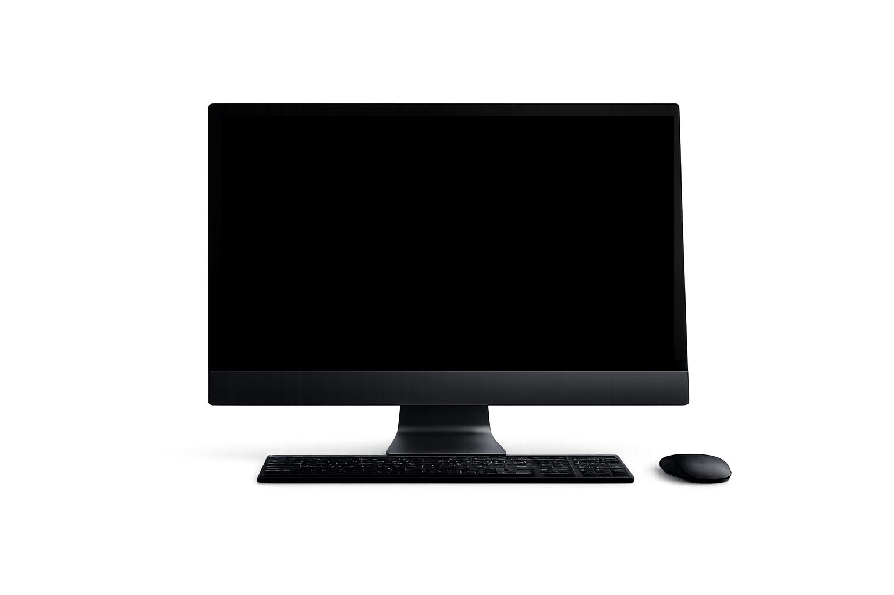
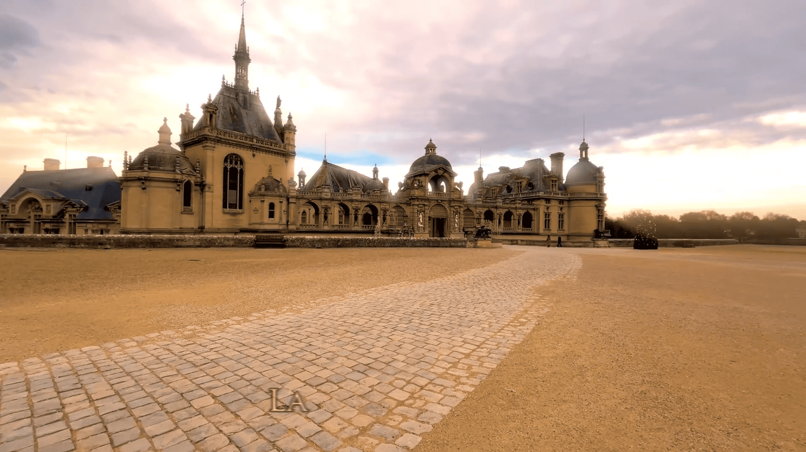

Guide touristique interactif – Château de Chantilly
PROJET PRINCIPAL


Outils et logiciels utilisés :
Déroulé du projet
De la préparation sur site jusqu’au guide interactif finalisé.
Préparation & repérage
Planification du contenu, repérage des lieux et écriture du scénario.
Prises de vue vidéo & photo
Captation des intérieurs et extérieurs du château en haute qualité.

Montage & édition vidéo
Assemblage des séquences, rythme, étalonnage et cohérence visuelle.
Création de la bande sonore
Ambiance immersive, mixage audio et intégration des narrations.
Conception graphique
Design de l’interface, éléments graphiques et mise en page du guide.
Guide interactif (en cours)
Expérience interactive intégrant vidéo, texte, images et navigation.